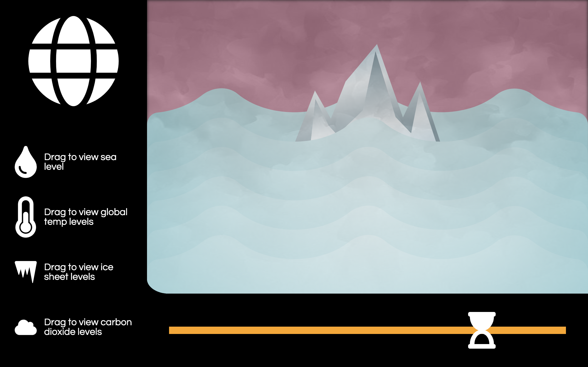

PROJECTS

PROMPTChoose a text and use web technologies as an expressive platform for it using HTML & CSS.
Inspired by Ella Fitzgerald's rendition of It's Only a Paper Moon, this project attempts to visualize 4 verses of the song into different scrollable modules. Though somewhat buggy, the aim was to familiarize myself with
the basics
of
HTML and CSS.

PROMPTChoose and study a “default” of the web and either enhance it or subvert it.
Clickbait is everywhere online: it is one of marketing's favorite tools for increasing exposure. The goal of this project was to imitate and augment the feelings associated with familiar clickbait elements.

PROMPTChoose a span of time to represent as a multi-page website.
This project utilizes data extracted from
NASA's Climate Vital Signs page. Carbon dioxide, global temperature, ice sheets, and sea level data points are visualized for each year. By dragging icons to the
designated area and moving the slider at the bottom, the user is able to see the different changes that have occured wihtin the past years.